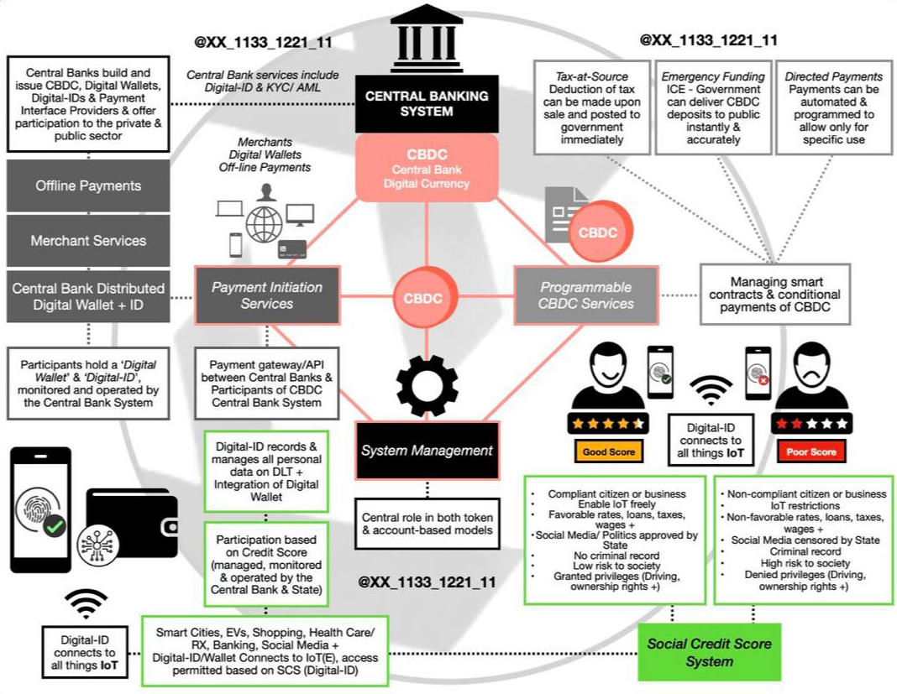

A CBDC is virtual money backed and issued by a central bank. As cryptocurrencies and stablecoins have become more popular, the world’s central banks have realized that they need to provide an alternative—or let the future of money pass them by.
More than a 100 countries are exploring CBDCs at one level or another. Some researching, some testing, and a few already distributing CBDC to the public.